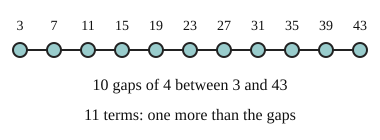

Part of Arithmetic Sequences. Answer in the chat (1: ..., g: c), add sure or guess after any answer, and say done when finished.
Last time: how many terms are in 3, 7, 11, ..., 43? You said b) 11, and it is.

To use the nth term you often need n, and listing every term to count them is slow. The distance from the first term to the last is made of whole steps, so (last - first) / d counts the steps (notes 3). Each step lands on a new term, and the first term was there before any step, so add one (notes 4):
n = (last - first) / d + 1
Q1. How many terms are in 7, 11, 15, ..., 143?
35 (sure)
Q2. The sequence 18, 25, 32, ... keeps adding 7. Which term is 200?
the 26th (sure)
Q3. Ana says 10, 15, 20, ..., 60 has 10 terms, since (60 - 10) / 5 = 10. What is wrong?
(60 - 10) / 5 = 10 counts the steps between terms. 10 is already a term before any step, so there are 11 (sure)
What is 2 + 4 + 6 + ... + 20?
b (guess)